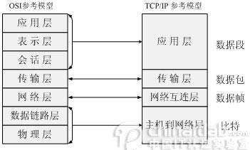
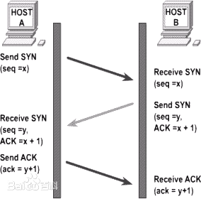
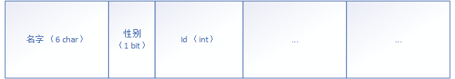
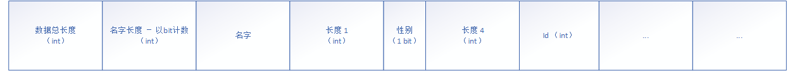

# 一、参考资源
- 书籍 《Unity 网络游戏开发》
- 书籍 《网络多人游戏架构与编程》
# 二、网络七层模型
- OIS 七层模型：概念略，网上有很多参考料。
 - 物理层：物理硬件发送信息，如：光纤，无线电波...
- 链路层：MAC 地址，寻址唯一主机。封装 MAC 地址。缺点：不灵活、不支持子网划分、不支持不同协议主机通信...
- 网络层：IPV4/IPV6 协议。解决链路层的缺点。封装 IP 地址。
- 传输层：端口（TCP/UDP 协议），主机之间的进程通信。封装端口。
- 应用层：App 协议。如：DNS 域名系统协议、NAT 协议...
- 游戏是进程与进程之间的交流，所以数据包在传输层发送和接收。
# 三、三次握手和四次握手
- 三次握手建立连接：概念略。
 - 四次握手断开连接，略。
# 四、Socket 连接流程
# 五、网络通信
# 1. 比喻
- 例子：
- 两个 English 人为什么能正常交流？ 是因为他们说着同一种语言 - 英语。
- 那么一个 English 人能跟猫交流吗？ 杠精：有些猫能听懂你在叫它。
- 结论：
- 仔细研究上面案例，发现在交流中有三样东西：声带（发射器） + 声音（数据源） + 语言（通信协议）
- 猫的听力很厉害，声音比人听得清楚，所以猫不能跟人进行无障碍交流，是因为缺少了相互之间的语言 “通信协议”。
- 当你用 食物 + 声音 去训练猫时，其实你们是在建立这样的通信协议！
# 2. 发射器
# 3. 数据源 + 通信协议
- bit 流（数据源）
- 计算机只能识别二进制数据，所以计算机之间用比特流传输数据。
- 通信协议
- 整个 OIS 七层模型就是一个巨大的协议！这个协议让计算机能进行基础交流。
- 那么底层的协议解析完成，将会把剩下剥离出的数据源（bit 流）传输到游戏进程中，这时候就需要用我们自定义的协议去解析剩下属于我们的数据源，然后将解析的信息服务于游戏。
- 通信协议的实现
- 上层的游戏协议和底层的 OIS 协议其实大同小异，主要有两种封装数据方法混合而成的通信协议：
- 1. 固定大小放数据（定死）：例如最前面六个字符（6 char）放名字，一个 bit 放性别，四个字节（int）放 Id...
- 解析和封装协议：取（存）数据就按照固定位置、固定大小取出（存入）固定数据。
- 2. 数据长度 + 数据（灵活）：最简单的肯定先是固定长度（int）+ 数据，上面的例子就如下所示：
- 解析和封装协议：先取（存）长度，然后将按照前面的长度取（存）数据。
- 思考一下，这种方法是灵活了，比如名字我可以存 10、100、1000 个字符，都能正常解析和封装！
但是像性别呢？明明性别只需要一个 bit 存储，却要用 32 个 bit 去标记长度，也太因小失大了！ - 其实在真正的游戏开发中数据长度也是灵活的，每个数据长度都需要一个 int (32 bit) 去存储，太浪费了！
- 游戏通信协议的实现就是上面两种方法的结合体！
# 六、心跳
- 如果玩家不正常退出游戏（比如：闪退、Crash、直接清理后台...），那么服务器怎么检测客户端已经断开，并清理客户端的数据呢？
- 如果服务器宕机，或者客户端网络较差，那么客户端怎么检测这些情况并提醒用户呢？
- 其实方法很简单：服务器和客户端之间维护着一个心跳系统，该系统会隔一段时间向对方发送一条包含时间的信息（心跳包）。
- 如果在规定时间没有返回，则对方已经断开。
- 如果返回时间较长，则网络较差。
# 七、拆包和粘包
- 数据包太大，一次性发送不了。将数据包拆成多个包发送，在另一边粘和起来（需要使用统一的拆粘协议）。
- TCP 是一个功能完善协议，底层自带分包和粘包功能。
- UDP 是一个白板，需要上层应用自己实现。为了网络效率，游戏大多使用 UDP 协议。
# 八、网络拓扑结构
# 1. 客户端 - 服务器
# 2. 对等网络